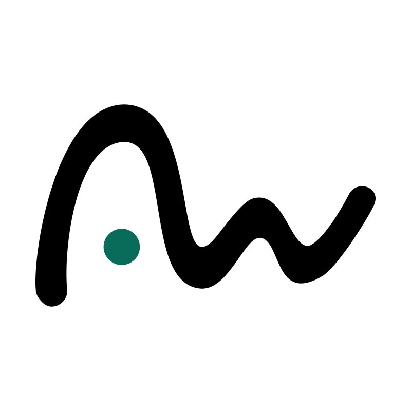

Aksi Sosial
Aksi Sosial
Penyaluran Bantuan Air Bersih Musim Kemarau 2026
Pemuda Paseban Tempuran mengerahkan armada truk tangki air bersih untuk membantu warga yang terdampak kemarau.
Lihat Dokumentasi LengkapPusat informasi, dokumentasi, dan arsip rekam jejak kepemudaan Dusun Krajan II, Desa Jatigunung. Menghubungkan pemuda dalam aksi gotong royong, kepedulian sosial, dan pelestarian kerukunan warga desa.
Catatan aksi nyata dan dinamika kegiatan kemasyarakatan di lingkungan Dusun Krajan II, Desa Jatigunung.
Aksi Sosial
Pemuda Paseban Tempuran mengerahkan armada truk tangki air bersih untuk membantu warga yang terdampak kemarau.
Lihat Dokumentasi LengkapPotret kehangatan gotong royong, kebersamaan warga, dan pengabdian pemuda di lapangan.


Kegiatan yang terorganisir berdasarkan bidang.
Update terbaru kegiatan Paseban Tempuran melalui platform media sosial kami.
Sanggar Seni Wayang & Karawitan

Digital Creative Problem Solver
Digital Printing | Sticker, Konveksi, & Sablon
Dukungan Anda, sekecil apa pun, sangat berarti bagi mereka yang membutuhkan.
Donasi Sekarang